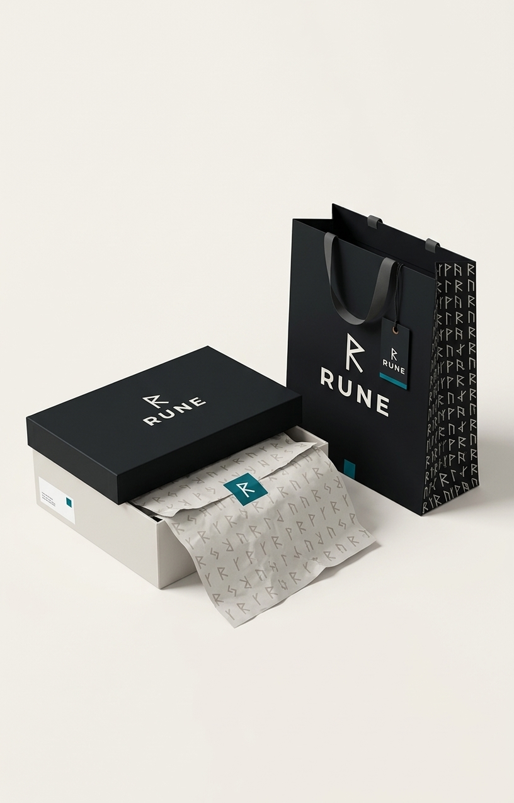

Raidō: la runa del viaje.
El símbolo de RUNE se construye con regla: trazo recto, uniones en ángulo, extremos rectos. Es la meta de cada línea de recorrido, del Km 00 al Km 42.
Dos integrantes de un equipo universitario de marcha no encontraban calzado para correr largas distancias. Con un ingeniero mecánico que dirigía una planta, fundaron RUNE en Ohio.
Fuente: descripción del caso del simulador (Años 1–10) y resultados de la compañía (Años 11–15).

El símbolo de RUNE se construye con regla: trazo recto, uniones en ángulo, extremos rectos. Es la meta de cada línea de recorrido, del Km 00 al Km 42.
Plantas en Norteamérica y Asia-Pacífico, almacenes en las cuatro regiones y equipos de diseño, marketing y finanzas.